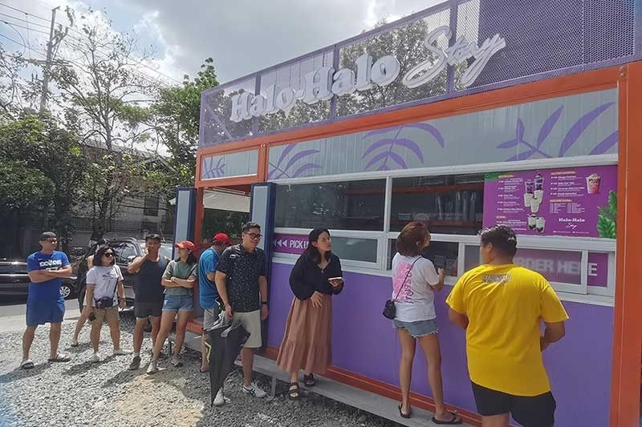

MANILA, Philippines - Halo-Halo Story has opened its fourth stand-alone take-away outlet in White Plains West, Quezon City. It has already been drawing lines of customers eager to beat the summer heat with a serving of the brand's versions of the popular Filipino cold dessert, Halo-halo. Opening at 11 a.m. daily, the store usually runs out of Halo-halo to sell not too long after. "It's a problem that I'm glad to do something about," said brand founder and product developer Duncan Yu, who marked the opening of his fourth branch by offering the best-selling Ubeng-Ubeng Ube flavor for only P4 per serving to the first 100 customers who came. The idea to open Halo-Halo Story came to Yu during the pandemic. "You can find Halo-halo everywhere, but it's just part of a restaurant's menu," he explained. "There's no specialty store for it. Well, there may be a few, but there's no Starbucks of Halo-halo, so to speak." Thus, Halo-Halo Story came to be, with Yu and his team developing 10 variants with catchy names such as Halo-Halo ng Kapitbahay, Klasik Iskrambol and Ubeng Ube, as well as the uniquely surprising concoctions like Buko Pie, Maja Blanca and Four Cheese. For this summer, the store offers a special seasonal flavor, Buco Pandan, which is available until May. Also up for grabs is Cinnamon Saba Con Hielo, a variation of another all-time favorite cold refreshment, Saging con Hielo.

The three other outlets are located in SM Pasig and SM Sta. Mesa food halls, and a drive-through along Quezon Ave. in Quezon City. Halo-Halo Story is among the new breed of Halo-halo brands that has replaced shaved ice with frozen milk as base. "It's the consistency and taste of the frozen milk we use which sets us apart," Yu said. "Others have followed our style for texture, but we manage to make every serving consistent."